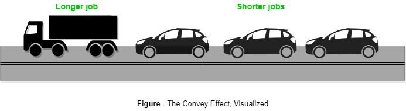

Prerequisites : Basics of FCFS Scheduling (Program for FCFS Scheduling | Set 1, Program for FCFS Scheduling | Set 2 )
Convoy Effect is phenomenon associated with the First Come First Serve (FCFS) algorithm, in which the whole Operating System slows down due to few slow processes.

FCFS algorithm is non-preemptive in nature, that is, once CPU time has been allocated to a process, other processes can get CPU time only after the current process has finished. This property of FCFS scheduling leads to the situation called Convoy Effect.
Suppose there is one CPU intensive (large burst time) process in the ready queue, and several other processes with relatively less burst times but are Input/Output (I/O) bound (Need I/O operations frequently).
The following then takes place –
- The I/O bound processes are first allocated CPU time. As they are less CPU intensive, the quickly get executed and then goto I/O queues.
- Now, the CPU intensive process is allocated CPU time. As its burst time is high, it takes time to complete.
- While the CPU intensive process is being executed, the I/O bound processes complete their I/O operations and are moved back to ready queue.
- However, the I/O bound processes are made to wait as the CPU intensive process still hasn’t finished. This leads to I/O devices being idle.
- When the CPU intensive process gets over, it is sent to the I/O queue so that it can access and I/O device.
- Meanwhile, the I/O bound processes get their required CPU time and move back to I/O queue.
- However, they are made to wait because the CPU intensive process is still accessing an I/O device. As a result, the CPU is sitting idle now.
Hence in Convoy Effect, one slow process slows down the performance of the entire set of processes, and leads to wastage of CPU time and other devices.
To avoid Convoy Effect, preemptive scheduling algorithms like Round Robin Scheduling can be used – as the smaller processes don’t have to wait much for CPU time – making their execution faster and leading to less resources sitting idle.
References –
- A. Silberschatz, P. Galvin, G. Gagne, “Operating Systems Concepts (8th Edition)”, Wiley India Pvt. Ltd.